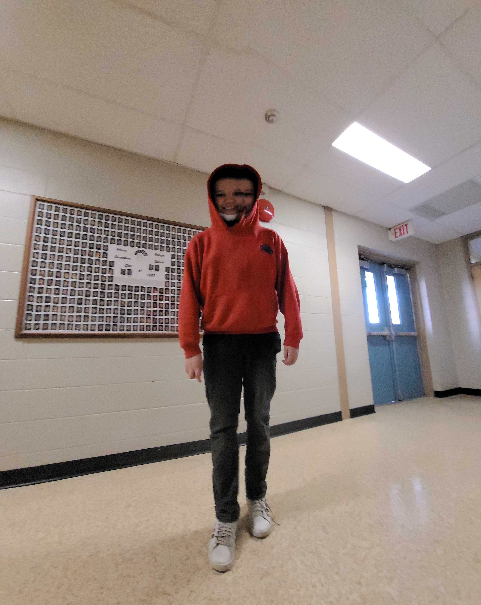

SCP NUMBER ONE. Class: 2
SCP NUMBER ONE nicked named "Bill" is class 4 entity Lucas. People known to approach Bill have been met with confusion and fear at his appearence. Bill has been contained but is constantly trying to breach out, he is assisted in this task with his teleporting skill, which has puzzled staff at seeing him suddenly dissapear; though recent studies have been contridicting this as it showed he doesn't actually leave the room when he vanishes. It is now believed that Bill doesn't actually teleport. but instead hides in the heavily forested area that is in his enclosure, and it is also believe that most personnel watching him have visibility issues.
Staff: What happened when you saw him?
Mitchell: I ran away.
Staff: What happened next?
Mitchell: Ahh. He ran away.
Staff: is that all?
Mitchell: Yeah.